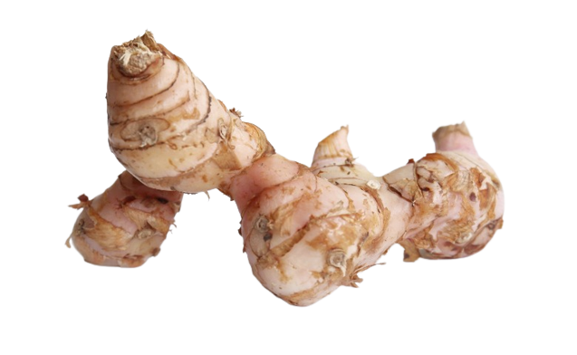

Fever Brew terbuat dari apa?
Fever Brew terbuat dari 100% bahan tradisional yang terdiri dari:
Cinnamomum Burmanni Cortex(Kulit Kayu Manis)

Kaempfaria Galanga (Kencur)

Fever Brew adalah obat tradisional berbentuk rajangan yang bisa digunakan untuk meringankan gejala demam
Fever Brew terbuat dari 100% bahan tradisional yang terdiri dari: